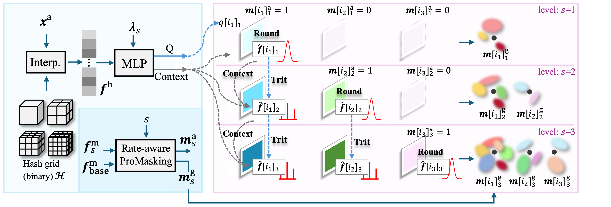
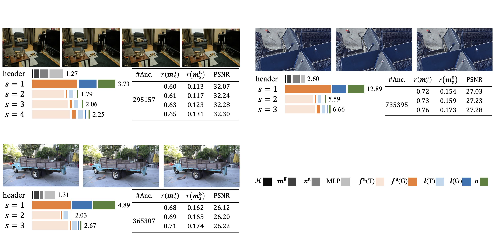
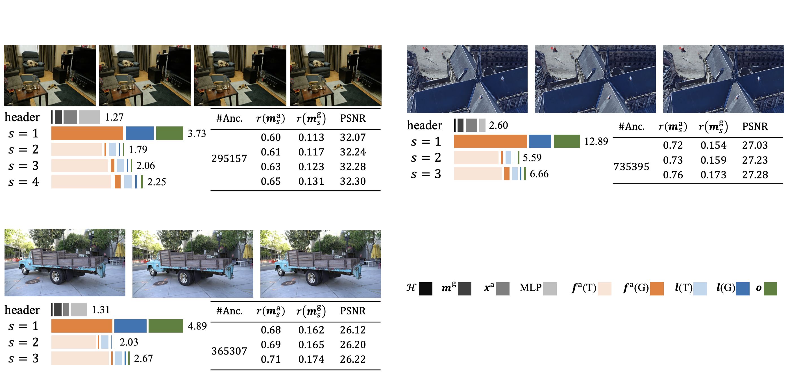

While many compression techniques have been proposed, they fail to efficiently utilize existing bitstreams in on-demand applications due to their lack of progressivity, leading to a waste of resource.
we propose PCGS (Progressive Compression of 3D Gaussian Splatting), which adaptively controls both the quantity and quality of Gaussians (or anchors) to enable effective progressivity for on-demand applications. Specifically, for quantity, we introduce a progressive masking strategy that incrementally incorporates new anchors while refining existing ones to enhance fidelity. For quality, we propose a progressive quantization approach that gradually reduces quantization step sizes to achieve finer modeling of Gaussian attributes. Furthermore, to compact the incremental bitstreams, we leverage existing quantization results to refine probability prediction, improving entropy coding efficiency across progressive levels.
Overview of the proposed PCGS, which controls anchors in both quantity and quality in a progressive way, i.e., progressively decoding new anchors via masking control and refining existing anchors with finer quantization steps. Please refer to the paper for more details.
 

@article{pcgs2025,
title={PCGS: Progressive Compression of 3D Gaussian Splatting},
author={Chen, Yihang and Li, Mengyao and Wu, Qianyi and Lin, Weiyao and Harandi, Mehrtash and Cai, Jianfei},
journal={arXiv preprint arXiv:2503.08511},
year={2025}
}